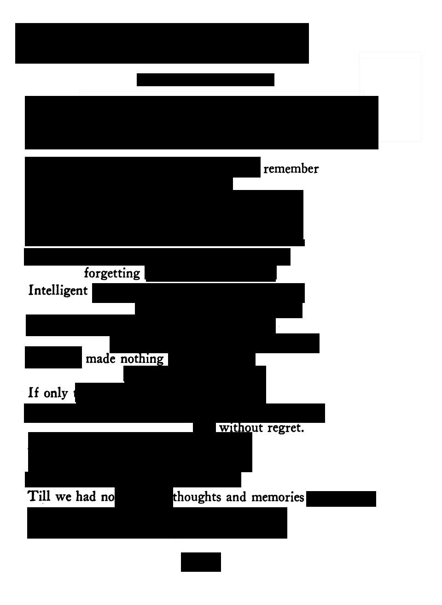

2021-12-16
Li, Bai. Exile’s Letter
Trans. Harriet Monroe Poetry. March 1915. December 3, 2021. https://www.poetryfoundation.org/poetrymagazine/browse?contentId=13065
The title, Exile’s Letter
, perhaps refers to a letter written from exile, to the concept of exile, or to somebody else in exile. The poem is a story of two friends who founded a tavern together, and met interesting people from across the seas. Then they had to seperate and only had memories of each other. However, they meet again: And when seperation had come to its worst / We met, and travelled together into Sen-Go.
The poem’s connotation is melancholic, but is more hopeful than sad. The shift of the poem is in the last few lines of the poem, quoted above. The rest of the poem is talking about how sad it is that they are seperated, but the last line subverts this when they meet again.
Forgetting

My poem is blackout poetry, taken from the poem Exile’s Letter
. My poem is titled Forgetting
, and it is about losing your memory. In the original poem, the speaker is separated from their friend, but still has the memories of their time together. My poem is about how if you forget everything, there is nothing left that is you. Memories are some of the most important things in life, and one of my greatest fears is forgetting everything. I made this poem with that in mind.
Norinaga, Motoori. The Spirit of the Japanese
Trans. David Bowles. July 2013. December 3, 2021.
The title, The Spirit of the Japanese
, sugguests that this poem is about something to do with Japanese culture. The poem sums up The Spirit of the Japanese." as
, and the sun all contribute to this connotation. I would say that this poem is about peacefulness and simplicity. The theme of this piece is that the Japanese spirit is peacefulmountain cherry blossoms, glowing in the morning sun.
The main phrase of the poem: mountain cherry blossoms, glowing in the morning sun
has a powerful connotation of peacefulness. The cherry blossoms, the word ’glowing
A fish through water
A fish, seen from above,
Is nothing but a small piece of a shape,
Soaring through a flowing sky
The original poem: The Spirit of the Japanese
is concise yet meaningful, and I aimed for the same thing in my poem. The original also had a certain sense of calm and peace, and I wanted to reflect that in my poem. So, my poem is also short but sweet. It is about looking at the surface of a river, and seeing a fish on the surface and the ripples it makes. When fish are swimming it almost looks like they are flying through the water, and I made my last line in reflection of that.
Castellanos, Rosario. Talk
December 3, 2021
The title Talk
doesn’t leave a lot to interpretation: this poem is about talking. My interpretation of this poem is that language is a fundamental part of the universe. All throughout the poem, there are some interesting punctuation choices. For example, the second line starts with …, and that same stanza ends with …
These factors combine to invoke a feeling of wonder and mystery. I would say the shift takes place between the two stanzas: in the first stanza, the speaker talks about the fundementality of speech, and of turning ideas into speech. The second stanza talks about interpreting speech. The title is interesting considering the last word of the first stanza: and is pronounced in only one word…
perhaps this word is Talk.
Speech
These dead words come to life upon our tongues, spelling out our ideas without a second thought for themselves.
Selflessly serving us in our efforts to pluck a thought from our head and send it spinning across the void.
Selflessly helping us understand.
But is it really so selfless?
We use the words to send our messages, but the words themselves are always there at the root, a unique fingerprint of the culture that produced them, perhaps shaping the very ideas that form and are flung through the air.
We serve the words as much as they serve us.
My poem, Speech
, is based on the original poem Talk
. I decided to take a different approach than the original poem in interpreting the subject matter of the poem. My poem is about the relationship between people and words, and how the fact that words, in some form or another, are the only way we can communicate our ideas and thoughts to other people, and so how in a certain sense they have power over us. Of course, we are the ones who created the words, and they can change with the times, but there’s an idea called the Sapir–Whorf hypothesis that says that the language that we speak can influence the way that we think.
Li, Po. The Long War.
Trans. Harriet Monroe. Poetry. August 1926. December 6, 2021. https://www.poetryfoundation.org/poetrymagazine/browse?contentId=17257
The title uses The, which makes it seem like this war is important, and that you’ll know what long war they’re talking about. The poem is talking about a war that has been waged for so long that it is hard to imagine that it will ever stop. It talks about the futility of efforts to stop it, like the Great Wall. The poem has a connotation of sorrow and grief for all the people lost in the war. The author’s attitude in this poem is pretty clearly against the war: they are sad that it is happening, but at the same time they do not believe that it will ever cease. In the middle of the poem, we shift from descriptions of battle to lamentation of the conditions of fighting and the Tartars who continue the conflict. In The Long War
’s title, long is the most important word. The poem seems to focus on how long the war has been going on, and how unending and useless it all is. The theme of the poem is about the futility of war, which is most potently demonstrated by this quote: Plowing, oh from ancient times, in the fields of white bones and yellow sands! / It was in vain that the Emperor of Chin built the Great Wall
The Short War
It was nothing: a boiling drop of anger and heat and conflict in a sea of calm and cold.
History will not remember it.
Useless.
Futile.
Unknown.
Why even give it a second thought?
There was only one casualty.
This poem contrasts the original poem, The Long War
by having the opposite title: The Short War
. While The Long War
focuses on a war that has gone on for so long that it seems like it will never end, a war that feels like it is taking up the whole world. My poem is about a war that is the opposite: a war that was so tiny, short, useless and insignificant that it is completely forgotten by history. However, one person lost their life in it, in a conflict forgotten by all.
Onsando, Michael. Still.
December 6, 2021
The work is called Still
. This title is ambiguous. The poem, like the title, is ambiguous: It talks about the resilience of a big black kenyan man
, but it could also mean that the struggles of such men are under-estimated. The poem’s connotation is mostly neutral. However, in the phrase Still, it’s okay. It’s a big black Kenyan man.
(which I believe is also the shift of the poem) the poem becomes more about the person than the pain. The phrase Still
is found in only one place in the poem: however it is the main shift of the poem, and it is the start of the author’s opinion.
Silence
The stifling silence ringing in my ears.
The sound of many people being quiet.
A silence so silent that it,
Sounds like a deafening roar.
The very texture of the air seems to vibrate with expectation.
This silence
Cannot wait to end.
My poem is about how even when things seem quiet, there’s lots of little noises that give the silence a texture. In my poem, the silence is of a crowd waiting for something to happen. My poem isn’t really based on Still
, it was mainly just inspired by the title. However, stylistically my poem is similar to Still
. It contains a shift between stanzas, as well as a focus on a repeated motif. However, our poems differ in subject and message.